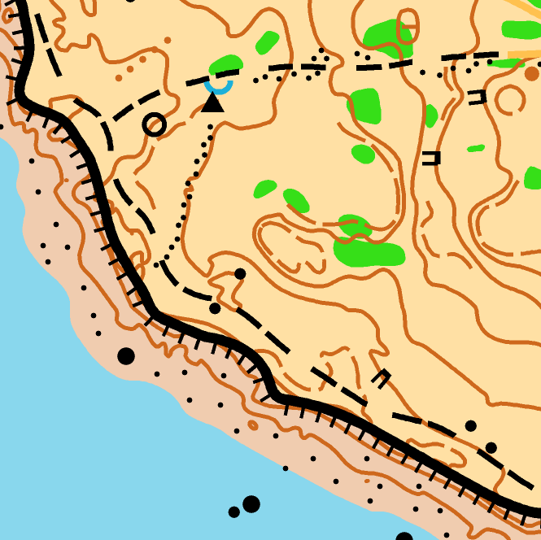
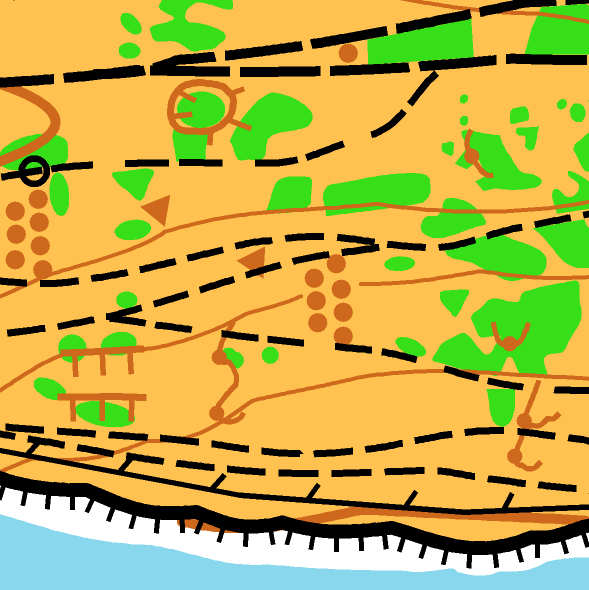

Needles and Knolls
A weekend of holiday orienteering to celebrate WightO’s 50th anniversary, with races at the Island’s two iconic lighthouses. Both lie within National Trust Areas of Outstanding Natural Beauty, delivering dramatic south-coast views from the white cliffs of the Needles to the Knolls of Knowles Farm at St Catherine’s Point.
Key Information
🎯 Day 1: Double Sprint
- Two sprint-distance races in complex terrain (not urban)
- A small, complex area mapped at 1:4000
- Final result is the two sprint times added together
- Open, Vets, Super Vets, Junior classes available
- Start window 10:30-11:30 and 12:00-13:00, you will run two courses with 90 minutes between start times
- Level D event
🎯 Day 2: Middle Distance
- Fast terrain above the white cliffs of the needles
- Range of colour coded courses
- Start window 10:30-12:30
- Level C event
🎫 Entry Information
- Pre-entry via racesignup, details available here when entries open
- Limited entry on the day until maps run out
- SportIdent electronic punching system
- Entry limit of 200 competitors
About the Event
WightO is one of the smaller clubs in the SCOA region. Although isolated from neighbouring clubs it has remarkably survived the past 50 years. The National Trust have supported the club throughout and allow us access to orienteer on some of the most dramatic landscapes in the country. To mark this momentous milestone in our club's history we have chosen the sites of the island's two iconic lighthouses to stage a weekend of orienteering for our anniversary event.
Day 1
Saturday 5th Sept, St. Catherine's Lighthouse & Knowles Farm
St Catherine's Lighthouse is located at the southern most point of the island. The map incorporates the dramatic and rugged coastline dominated by the lighthouse. The coastal section is undulating and very open, allowing fast runnability through the many rock formations around Knowles Farm. The backdrop is a climb through wild scrubland with intricate paths that lead you to the higher ground. Here too the terrain is very open but more undulating and diverse. The entire area is covered with an array of monolithic rocks, giant boulders and steep sided crags which make this area quite unique. The contour detail is complex and although the area is quite small it packs a punch and ideally suits the sprint format. The results will be determined by the overall time taken over two designated courses.
Day 2
Sunday 6th Sept, The Needles Headland
The infamous Needles Lighthouse is at the far western point on the island. The map stretches from the memorial cross on the top of Tennyson Down, to the less talked about ruins of the rocket launching site, Needles headland and battery. From here you look down to the famous colourful sand cliffs at Alum Bay and the views from wherever you are on the map are spectacular! The terrain is very fast open down land, peppered with an abundance of embankments, knolls, earth walls, pits and depressions. Much of the thick gorse at the eastern end has been recently thinned out making the area even more accessible for this middle distance race.
WightO are negotiating with local businesses for reduced rates on ferry crossings and accommodation to those taking part at this event along with reduced rates for many of the local attractions that the island has to offer. These will be posted on this website in due course. Our aim is to, not only provide a unique orienteering experience, but to ensure your weekend here is a memorable one. So please send any queries to info@wighto.org.uk.
Officials
Organiser: Peter Bartlett
Sprint Planner: Peter Bartlett
Sprint Controller: Ben Windsor
Middle Planner: Ben Windsor
Middle Controller: Tom Dobra (TVOC/DRONGO)
Map Samples
St Catherine's Point
The Needles
Get in Touch
Have any questions about the event? Get in touch!